Introduction
This is a research study. We want to understand how to best show network data (items with connections between them).
We will show you a visualization of US airports (ex: MIA, JFK) with links between airports that
often have connecting flights.
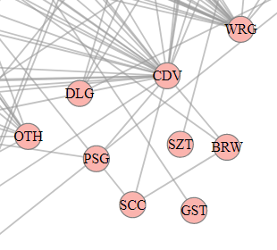
You can interact with the visualization as follows:
-
Zoom by using the mouse wheel.
-
Pan by pressing the left mouse button down and
dragging (as in Google maps).
-
Select and deselect airports as answers by double-clicking on them.
-
Select and deselect airports as highlights by clicking on them once.
-
Move airports by
dragging them (sometimes this can be useful to tell where its links go).
-
Mouse-over airports and links to highlight them.
Here is an example of a selected answer, a highlighted node, a hovered node and a hovered edge respectively.
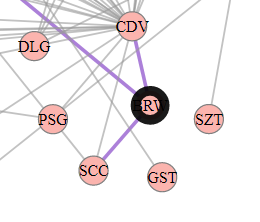
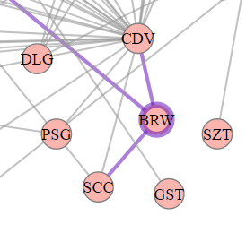
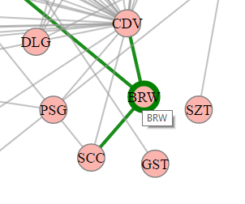
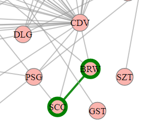
We will ask you a few questions about this data. Please answer the questions as fast and accurate as possible by viewing
and interacting with the visualization. There will be a countdown for each question; once it expires, we will
hide the visualization. We will give you a turk-code to use for payment once you finish the study.
We will pay a $2 bonus to the user with the best overall accuracy/time.
The study includes two questions we consider to be easy enough that everyone can answer correctly. You need to answer both
correctly to receive payment.
Tasks
Task 1: "Given the two highlighted airports, select all airports that they both connect to."
Remember, you
can select and deselect nodes as answers by double-clicking on them.
A Selected answer will have a black circle around the node.
See a few examples below:
| Questions | Answers |
| 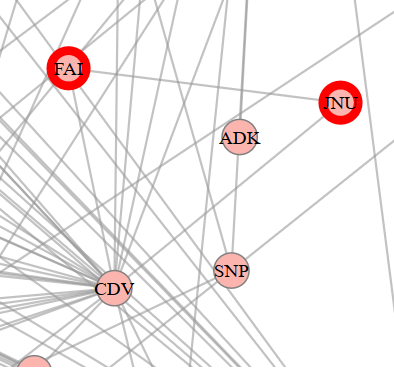 |
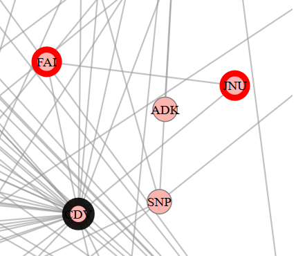 |
| 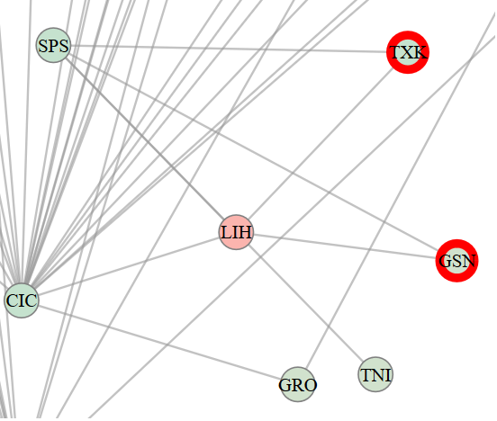
| 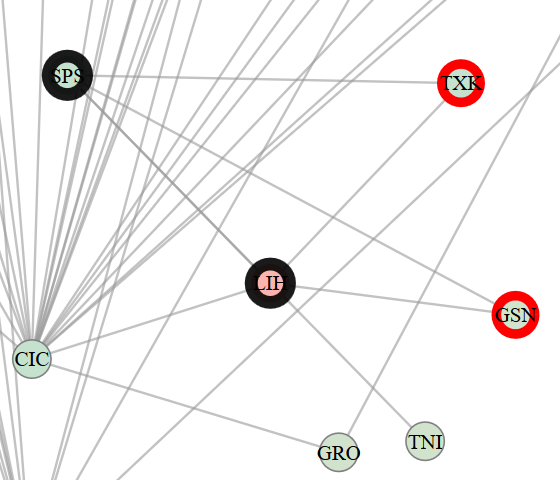 |
Task2: "Given the two highlighted pairs of airports (red and blue), can you estimate which pair has a shorter path of connections between them?"
HINT: The group whose members are closer in number of steps from each other wins.
This is an estimation task! You may not have time to find the exact match, just give your best guess.
| Questions |
Answers |
| 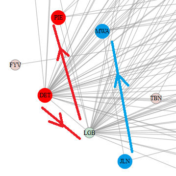 |
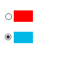 |
| 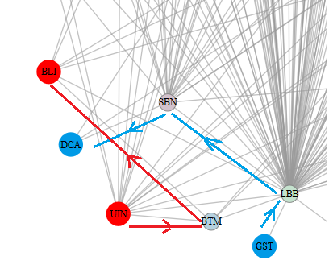 |
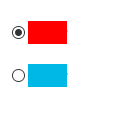 |